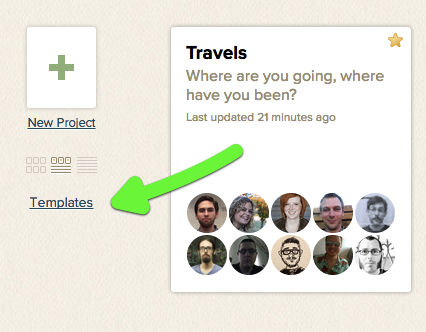
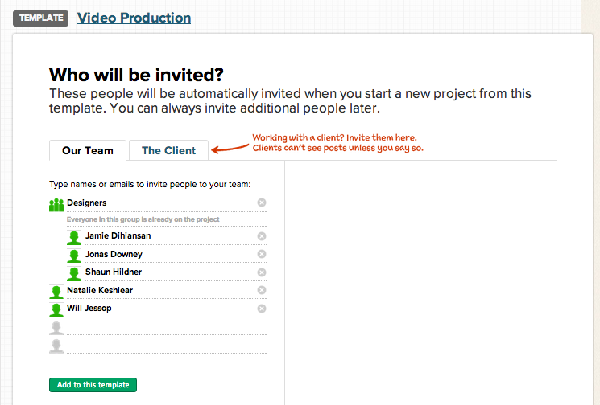
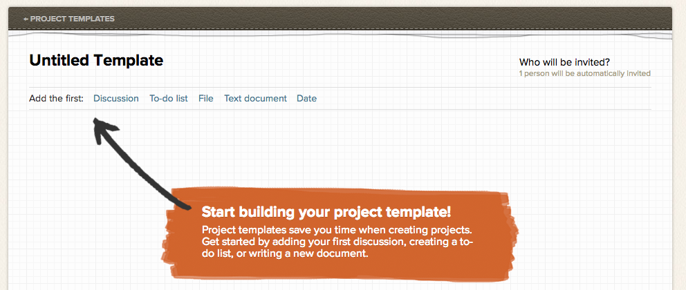
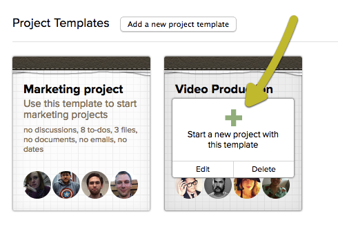
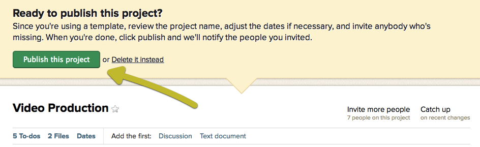
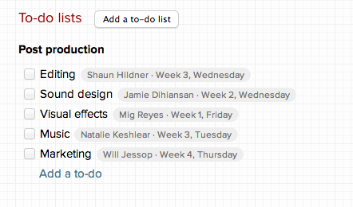

Create and view templates by clicking the link just below your "New Project"" button.

Templates are for full projects only. Check out Email-in or Copying for some tips on reusing to-do lists!
Add some people: Click the "Who will be invited?" link to add people to your template. These people will automatically be added to the project when it starts. These are the only people who can view and edit the template and create projects from it. You can set up client projects in your templates too!

These invitations aren't set in stone. You can remove users during the draft phase.
Add some stuff: Templates can contain almost everything an active project supports. This means you can add discussions, comments, to-do lists with assignments, dates, and files. Templates do not have Email-In addresses, though, so you won't be able to forward emails.

Files in your templates will count against your account limit.
Start a project from your template
Click Templates: Select your template and click "Start a new project."

Make changes: Before you start your project, you'll be able to make updates and changes. This is called the draft. When you're ready, click Publish. Your project will go live!

Templates don't count against your project limit, but drafts do. Only the person who created the draft will be able to access it.
Template dates
The dates you add are relative to the start date of the project. You'll be able to pinpoint which week and day of the week they occur.

The day you start your project is considered part of "Week 1." Week 1 starts on the prior Sunday. Your dates will be plotted relative to that day, and you can preview this in the Project Draft. You can make any date changes you need before the project goes live.
Notifications
When you start your project, the members will get one summary notification email. This email will contain all their assignments, messages, and other project info. Once the project is live, your notifications will resume as normal.